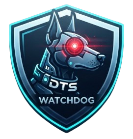

DTS WATCHDOG idle OANDA: menunggu sync prayer: -DTS WATCHDOG mendukung beberapa sumber data. Jika Source = OANDA, harga Bid/Ask dan candle berasal dari OANDA. Pair Binance yang dipilih dapat dipakai sebagai data pendamping DOM/CVD jika simbolnya aktif di Binance.
| Ikon | Fungsi |
|---|---|
| 🎨 | Ganti tema (15 pilihan warna) |
| 📋 | Copy sinyal JSON |
| 🔄 | Reset zoom & pan |
| 📊 | Panel info (Overview / Detail / Book) |
| ▶ / ⏸ | Play/stop musik |
| ⚙ | Setelan lanjutan (OANDA, Analisa, Ambience) |
| ❓ | Panduan ini |
Bar bawah: pair, harga berjalan (hijau naik / merah turun), spread, dan berita yang mendekat. Kalau tidak ada berita dekat → link t.me/aldodesatura.
| Scroll | Zoom waktu |
| Shift+scroll | Zoom harga |
| Drag | Pan vertikal |
| Double-click | Reset zoom/pan |
| Status | Artinya → tindakan |
|---|---|
| 🔥 ENTRY | Semua syarat lengkap → pasang LIMIT sesuai angka. |
| 🎯 SIAP-SIAP / SIAPKAN | Arah sudah ada, tetapi harga belum di zona (atau sudah lewat zona) → pasang alert di tepi zona, tunggu. Jangan kejar. |
| 🔍 PANTAU · ⏳ TUNGGU | Syarat belum cukup → tidak ada aksi. |
| ⛔ TAHAN · VETO · LAWAN TREN · DIBLOKIR | Berita, spread besar, veto MSNR, atau melawan tren → jangan entry. |
| Peran | Tab |
|---|---|
| 🎯 PERINTAH ENTRY (gabungan semua mesin) | Kartu KEPUTUSAN FINAL di paling atas tab Forecast |
| 🧰 Sinyal mandiri (punya entry/SL/TP sendiri) | PA Sniper · Overview · Pantul · R2 · Fibo Musang |
| ⚡ Pemicu / konfirmasi (izin masuk, bukan harga entry) | CISD · MSNR (veto) |
| 🧭 Konteks / peta (tidak ada entry) | Forecast (bias) · TFT · Zona · Detail · MathWave |
| 🌊 Elliott & Harmonic | Bukan tab: tampil sebagai baris di dalam Peta level terdekat (Detail) dan Tangga zona (Zona) — PRZ Gartley/Bat dan target gelombang 5. Konfluensi berbobot kecil, bukan perintah entry. |
| Gaya | Teknik utama | Konfirmasi |
|---|---|---|
| Scalp menit – 1 jam | Overview (orderflow) · Pantul | CISD M15 terkonfirmasi, tidak ada berita ±10 menit. R2 tidak dipakai untuk scalp. |
| Intraday ± 6 jam | PA Sniper · R2 (INTRADAY) · Fibo Musang | CISD terkonfirmasi + MSNR tidak veto + arah H1/H4 searah |
| Swing 1 – 3 hari | PA Sniper (mode swing) · R2 (SWING) · Forecast & TFT sebagai arah | D1 & H4 searah, RR ≥ 2.5, Fibo Musang searah |
Bobot di Keputusan Final berbeda per gaya: SCALP condong ke Overview, INTRA seimbang (PA terbesar), SWING condong ke Forecast & teknik mandiri.
Bukan level entry. Baca langkahnya di tab bantuan Teknik Mandiri → “Cara membaca tab CISD”. Ringkasnya: tunggu close M15 menembus level trigger searah plan, dan checklist CISD tercentang semua.
| Tab | Dipakai untuk |
|---|---|
| Forecast | Bias arah (NAIK / TURUN / SIDEWAYS; |skor| < 15 = sideways, ≥ 35 = arah jelas, ≥ 60 = kuat). “Rencana Skenario” (entry, SL, TP1 1.5R, TP2 2.5R) adalah skenario hitung, bukan sinyal; batal bila close H1 menembus invalidasi. |
| TFT | Prakiraan statistik harian (GARCH + simulasi): P(naik) ≥ 0.53 = bias naik, ≤ 0.47 = bias turun, pergerakan median > 30 bp baru muncul sinyal LONG/SHORT. Bukan tabel multi-timeframe dan tidak memberi entry/SL/TP; edge-nya tipis, anggap hanya konteks swing. |
| Zona | Peta area BUY/SELL dengan skor 0–100 (KUAT ≥ 70, SEDANG ≥ 50, LEMAH < 50). Kartu “terbaik” muncul bila skor ≥ 50 dan jarak ≤ 5 ATR. Ini area rencana; level entry ada di tab Pantul. |
| Detail | Peta level terdekat, pivot, likuiditas, struktur, FVG, divergence. Dipakai untuk memilih target dan invalidasi secara manual. |
| MathWave | Level proyeksi akar kuadrat dari swing low/high. Tidak ada status entry. Cara pakai: saat harga mendekati / menyentuh level (baris kuning “Tersentuh”), tunggu konfirmasi di tab sinyal (PA Sniper / CISD) sebelum masuk. Level adalah zona pantau. |
| Tab | Dipakai untuk |
|---|---|
| Forecast | Bias arah (NAIK / TURUN / SIDEWAYS; |skor| < 15 = sideways, ≥ 35 = arah jelas, ≥ 60 = kuat). “Rencana Skenario” (entry, SL, TP1 1.5R, TP2 2.5R) adalah skenario hitung, bukan sinyal; batal bila close H1 menembus invalidasi. |
| TFT | Prakiraan statistik harian (GARCH + simulasi): P(naik) ≥ 0.53 = bias naik, ≤ 0.47 = bias turun, pergerakan median > 30 bp baru muncul sinyal LONG/SHORT. Bukan tabel multi-timeframe dan tidak memberi entry/SL/TP; anggap hanya konteks swing. |
| Zona | Peta area BUY/SELL skor 0–100 (KUAT ≥ 70, SEDANG ≥ 50, LEMAH < 50) dan Tangga zona yang juga memuat PRZ Harmonic & target Elliott W5. Kartu “terbaik” muncul bila skor ≥ 50 dan jarak ≤ 5 ATR. Ini area rencana; level entry ada di tab Pantul. |
| Detail | Peta level terdekat (termasuk PRZ Harmonic & target Elliott W5), pivot, likuiditas, struktur, FVG, divergence. Dipakai untuk memilih target dan invalidasi secara manual. |
| MathWave | Level proyeksi akar kuadrat dari swing low/high. Tidak ada status entry. Saat harga menyentuh level (baris kuning “Tersentuh”), tunggu konfirmasi di tab sinyal (PA Sniper / CISD) sebelum masuk. |
MathWave menghitung level proyeksi harga dari swing low / swing high terakhir yang sudah terkonfirmasi (rumus akar kuadrat, koefisien 0,155). Tab MathWave berada tepat setelah R2 pada panel analisa.
| Kolom | Arti |
|---|---|
| Arah | SELL ▲ dihitung dari swing low (level di atas); BUY ▼ dihitung dari swing high (level di bawah). |
| Wave | Urutan level proyeksi W1 sampai W5. |
| Koefisien | Nilai k asli: 0.155, 0.236, 0.520, 0.768, dan 1.000. Ini koefisien dalam ruang akar harga, bukan persentase Fibonacci. |
| Harga level | Hasil perhitungan rumus Square Root. |
| Status | Menunggu berarti level masih menjadi area pantau, bukan sinyal entry otomatis. |
BUY ▼: memakai HIGH swing high terakhir yang terkonfirmasi. Rumus: (√H − k)², level diproyeksikan ke bawah.
SELL ▲: memakai LOW swing low terakhir yang terkonfirmasi. Rumus: (√L + k)², level diproyeksikan ke atas. Contoh: L=4715 → √L=68,6659 + 0,155 = 68,8209 → kuadrat = 4736,31.
MathWave mengikuti timeframe chart. Ia memakai candle MTF jika tersedia; jika cache MTF belum siap, otomatis memakai candle chart aktif dari source yang dipilih (termasuk OANDA). Swing dianggap valid bila punya 5 candle di kiri dan kanan. Ubah timeframe untuk menghitung ulang anchor dan level.
Pilih tema dari dropdown di header. Pilihan otomatis tersimpan di browser (refresh tetap pakai tema terakhir).
| Tema | Karakter |
|---|---|
| 🥈 Silver | Terang netral, enak untuk siang hari |
| 🌑 Dark | Gelap klasik emas, nyaman untuk malam |
| 🌌 Midnight | Biru tua malam, aksen biru terang |
| 🧊 Ice | Biru muda sejuk, segar |
| 🌲 Forest | Hijau hutan, natural |
| 🔮 Purple | Ungu modern, elegan |
| 🌅 Sunset | Oranye hangat, romantis |
| 🌊 Ocean | Biru laut dalam + cyan futuristik |
| 🍒 Cherry | Pink rose manis |
| ⬛ Mono | Hitam-putih minimalis profesional |
| 💜 Neon | Gelap + ungu/pink neon glow |
| 🌸 Sakura | Pink pastel jepang |
| 🎮 Cyberpunk | Gelap + kuning/cyan kontras tinggi |
| ☕ Coffee | Cokelat hangat cozy |
| 🧙 Matrix | Hitam + hijau digital rain |
const THEMES={...} di script. Formatnya: tiap tema punya css (UI), chart (canvas), dan lut (heatmap).Saat Source = OANDA, harga Bid/Ask dan candle diambil dari API OANDA. Instrumen OANDA di Setelan lanjutan (contoh XAU_USD, BTC_USD, atau EUR_USD) menentukan pasar utama. Harga OANDA tidak digeser memakai offset Binance.
PAXGUSDT/XAUTUSDT → XAU_USD, BTCUSDT → BTC_USD, dst.), harga live disinkron ke instrumen padanannya itu saja — tidak pernah ke instrumen lain. Tanpa padanan di OANDA (atau quote gagal/butuh Worker V2) otomatis harga Binance/Mirror murni.TRADING di Binance/Mirror; bila tidak ada, DOM/CVD dilewati (harga & candle tetap OANDA).Source awal adalah OANDA. Tanpa kredensial, harga quote default XAU_USD diambil otomatis melalui Cloudflare Worker yang sudah digunakan di index.html. Kolom Account ID dan API Token tetap kosong dan hanya diperlukan jika pengguna ingin mengambil daftar instrumen lengkap serta candle langsung dari akun OANDA sendiri. Pilihan Binance, Mirror, dan Simulasi tetap tersedia.
XAU_USD), pilih pair Binance pendamping jika ingin DOM/CVD, lalu klik Connect.TRADING. Jika tersedia, DOM/CVD berasal dari Binance; jika tidak, harga/candle OANDA tetap berjalan tanpa DOM/CVD Binance.| Data | Source OANDA |
|---|---|
| Harga Bid/Ask | OANDA |
| Candle / struktur / PDH-PDL | OANDA |
| DOM / orderbook | Binance, hanya jika pair terpilih tersedia |
| CVD / transaksi agresor | Binance aggTrade, hanya jika pair terpilih tersedia |
BTCUSDT bukan persis sama dengan BTC_USD; EUR/USD tidak otomatis memiliki pasangan forex langsung di Binance.stream.binance.com:9443 → :443 → data-stream.binance.vision) dan REST fallback otomatis bila WebSocket diblokir; host aktif tampil di baris DOM/CVD:. Jika tetap tidak aktif, cek pair Binance yang dipilih dan statusnya. Harga OANDA tetap dapat berjalan meski pair Binance tidak ditemukan.| Istilah | Arti |
|---|---|
| Heatmap | Warna = besarnya order di level harga. |
| Trade bubble | Bulatan hijau = buy, merah = sell. |
| Wall | Order besar stabil ≥8 detik. |
| Spoof | Order besar yang hilang cepat (fake). |
| Pending | Order besar stabil ≥3s & ≥3× rata-rata. |
| Absorption | Banyak order masuk tapi harga diam. |
| Imbalance | Rasio bid : ask di 10 level teratas. |
| Delta 60s | Total buy − total sell 60 detik terakhir. |
| CVD | Cumulative Volume Delta. |
| POC | Point of Control. |
| VAH/VAL | Value Area High/Low. |
| BSL/SSL | Buy/Sell-Side Liquidity. |
| SNR | Support/Resistance gabungan. |
| SND | Supply & Demand zone. Angka = skor kekuatan 0-100 (ukuran wall, umur, absorpsi, HVN, SNR; spoof mengurangi). |
| FVG | Fair Value Gap (celah 3 candle). Skor 0-100: ukuran gap, kekuatan candle tengah, volume, kebaruan, belum terisi. Mode candle saja. |
| IFVG | FVG yang ditutup candle menembus, lalu berbalik jadi S/R lawan. Skor naik jika sudah retest. Mode candle saja. |
| Skor | ≥70 KUAT, 45-69 SEDANG, <45 LEMAH. |
| Lvl | Kekuatan pivot, camarilla, VAH/VAL/POC, EQH/EQL: berapa kali dites & bertahan, HVN, dan berimpit dengan level lain. |
| Depth 1000 | Snapshot 1000 level orderbook. |
| Window | Berapa detik ke belakang |
| Gamma | Kontras heatmap |
| Wall× | Berapa kali rata-rata untuk disebut wall |
| Zone W | Lebar minimum zona |
| Min $ | Jarak minimum zona |
| Dist $ | Filter zona terlalu dekat |
Kartu paling atas = KEPUTUSAN FINAL, sumbernya DTS Adaptive. Hanya ini yang boleh dijadikan perintah. Status: 🔥 ENTRY (pasang LIMIT sesuai angka) · 🎯 SIAP-SIAP (belum entry, tunggu harga mendekati) · 🔍 PANTAU / ⏳ TUNGGU (belum ada setup) · ⛔ TAHAN (berita USD high-impact ±10 menit). Saat ENTRY keluar, angka LIMIT/SL/TP dikunci 30 menit dan tidak berubah-ubah; setup batal hanya bila harga menembus SL, selesai bila TP2 tercapai.
Suara: ENTRY berbunyi dan berbicara sekali per setup (menyebut LIMIT, SL, TP, keyakinan). SIAP-SIAP paling banyak sekali per 10 menit dan tidak berganti arah bolak-balik. BATAL / TARGET berbunyi sekali. Bias Forecast, rincian mesin (dilipat), dan tab teknik mandiri hanya bahan baca. Penjelasan di bawah ini menerangkan bahan mesin lama; keputusan akhir selalu mengikuti kartu paling atas.
Kartu Keputusan Mesin di bagian atas tab Forecast menggabungkan PA Sniper (struktur & lokasi), OV (tekanan pasar), R2 (pemicu) dan Forecast (arah & target) menjadi satu keputusan per gaya trading. Ketuk kotak SCALP / INTRA / SWING untuk melihat rincian; ★ menandai horizon terbaik saat ini. Tab teknik mandiri (Fibo Musang · MSNR · CISD) hanya konfirmasi tambahan. R2 dihitung sejak bukti awal (tidak menunggu trigger resmi). Bobot tiap mesin berbeda per horizon: SCALP condong ke OV & R2, INTRA seimbang, SWING condong ke Forecast & teknik konfirmasi. Bunyi/suara alert hanya dari kartu ini (dan berita HIGH).
| Kondisi | Keputusan |
|---|---|
| PA + OV + R2 searah | Peluang kuat → ENTRY |
| PA + OV searah, R2 belum ada bukti | Terdeteksi → SIAP (ENTRY bila PA sudah ENTRY VALID) |
| PA vs tekanan OV berlawanan | EVALUASI reversal (SIAP arah OV bila OV kuat dan ≥2 mesin lain ikut) |
| PA vs R2 berlawanan | Tidak di-veto: ENTRY arah R2 bila R2 sudah terisi atau OV mendukung R2 (ukuran kecil); selain itu EVALUASI |
| Forecast / teknik konfirmasi berlawanan | Peringatan + keyakinan turun, tidak membatalkan |
| Harga lewat SL rencana | Satu-satunya pembatal otomatis → TUNGGU |
Dua teknik punya tab sendiri di bar tab panel info (kanan tab PA): Fibo Musang (model entry DB/CB1 + target fib) dan CISD (trigger change in state of delivery). MSNR (story line H4 + BOS 15M + order block) bekerja di belakang layar sebagai suara dan veto, tanpa tab sendiri. Zona, Tangga zona, PRZ Harmonic dan target Elliott tetap tampil menyatu di Peta level terdekat (tab Detail), Tangga zona (tab Zona) dan Peta Level & Target (tab Forecast). Data tiap tab di-refresh otomatis tiap 4 detik. Status Elliott & Harmonic selalu terlihat di kartu 🌊 pada tab Detail dan Zona; PRZ ◔ = pola masih terbentuk (proyeksi D), Elliott ▶ = gelombang 5 sedang berjalan. Keputusan final dibaca di tab Forecast: kartu Anti-Miss Entry + Keputusan Final — prinsipnya: tanpa konfluensi = jangan entry; konfluensi valid = eksekusi plan tanpa ragu.
| Tampilan | Arti & yang dilakukan |
|---|---|
| 🔥/✅ ENTRY BUY·SELL + grade | Satu suara tercapai: 0 bantahan, minimal 3 teknik searah, keyakinan ≥60%. Eksekusi plan yang tertulis. Grade A+ = 5/5 searah & keyakinan ≥88 · A ≥75 · B 60-74. |
| ✋ SIAPKAN … | Arah sudah satu suara tapi harga sudah lewat zona entry. Jangan kejar — tunggu pullback ke zona (batasnya ditulis di banner & Rencana Eksekusi). |
| ✋ TUNGGU | Belum boleh entry. Alasannya SELALU ditulis di bagian Kenapa Belum Entry — baca di situ, jangan menebak. |
| Keyakinan 0-100% | Jumlah bobot teknik yang setuju, dikoreksi kondisi eksekusi: CISD terkonfirmasi +6 / belum −6 · story H4 segar (≤2 candle) +4 · harga di zona entry +6 · harga lewat zona −8 · veto MSNR dipotong ke maksimal 40. |
| ⛔ VETO MSNR | Story line H4 melawan arah entry. Aturan induk sistem: setup dibatalkan — tidak peduli teknik lain sepakat. |
| Titik ● di tombol tab | SATU SUARA sedang hidup (hijau = keyakinan ≥75, kuning 60-74). Buka tabnya sekarang. |
| Teknik | Bobot | Peran |
|---|---|---|
| Fibo Musang | 30 | Model entry presisi (pemicu utama). Tanpa polanya → tidak ada plan entry. |
| MSNR | 25 | Makro / story line H4 — syarat wajib; kalau berlawanan → veto. |
| CISD | 20 | Trigger perubahan state of delivery. |
| Harmonic | 15 | Zona reversal PRZ (Gartley/Bat). |
| Elliott | 10 | Target gelombang 5 (ekspektasi balik arah). |
| Kalo… | Artinya |
|---|---|
| Candle H4 menusuk di bawah support lama lalu CLOSE balik di atasnya | Reject support → story BUY (penjual gagal menembus, harga ditolak ke atas). |
| Candle H4 menusuk di atas resistance lama lalu CLOSE balik di bawahnya | Reject resistance → story SELL. |
| Line chart 15M BOS searah story | MSNR siap → suara AGREE untuk arah itu. |
| Story ada tapi 15M belum BOS searah | MSNR netral — tunggu konfirmasi 15M dulu, jangan selingkung sendiri. |
| Story BUY tapi plan entry SELL (atau sebaliknya) | ⛔ VETO MSNR — setup dibatalkan. |
| Order block ditampilkan | Candle berlawanan terakhir sebelum BOS = zona retest: kalo harga balik ke OB searah story → peluang entry, SL di luar OB. |
| Kalo… | Artinya |
|---|---|
| Candle momentum menembus ≥3 candle berlawanan berturut-turut lalu close melewati seluruhnya | Pola DB → arah entry = arah break (break naik → BUY, break turun → SELL). |
| Candle menelan candle sebelumnya + candle berikutnya close menembus | Pola CB1 — aturan level sama dengan DB. |
| Harga di antara fib 50%-100% | DI ZONA ENTRY — boleh eksekusi: entry utama di 100%, entry lebih baik di 50%. |
| Harga sudah melewati zona menjauh | SUDAH LEWAT ZONA — JANGAN KEJAR. Tunggu pullback ke zona; batasnya tampil di panel. |
| Harga belum balik ke zona | MENUNGGU PULLBACK — pasang alert di tepi zona (fib 100%), eksekusi saat disentuh. |
| SL / TP | SL = di luar harga 0% candle anchor + buffer 5% range · TP1 = 161.8% · TP2 = 261.8% · RR dihitung otomatis di Rencana Eksekusi. |
| Kalo… | Artinya |
|---|---|
| Terdeteksi 5 gelombang impulsif NAIK selesai | Siklus naik matang → bias SELL, target proyeksi 1.618 gelombang-5 ke bawah. |
| 5 gelombang impulsif TURUN selesai | Bias BUY, target 1.618 ke atas. |
| Belum ada struktur W5 valid | Netral — Elliott tidak memberi suara. |
| Kalo… | Artinya |
|---|---|
| Pola selesai dengan titik D di bawah (low) | Pola bullish → bias BUY di PRZ (zona antara D dan C). |
| Pola selesai dengan titik D di atas (high) | Pola bearish → bias SELL di PRZ. |
| Harga tiba di PRZ searah arah entry | Konfluensi kuat → AGREE (harga sampai di zona reversal rasio 0.618/0.886). |
| PRZ melawan arah entry | OPPOSE — harga di zona berlawanan; risiko reversal menabrak posisi. |
| Kalo… | Artinya |
|---|---|
| Run delivery turun, lalu close menembus DI ATAS open terendah run itu | CISD BUY — state of delivery berubah menjadi naik. |
| Run delivery naik, lalu close menembus DI BAWAH open tertinggi run itu | CISD SELL. |
| Tertulis “terkonfirmasi” | Close penembus sudah terjadi → trigger hidup (+6 keyakinan). |
| Tertulis “belum terkonfirmasi” | Sinyal terbentuk tapi belum ada close penembus → suara dihitung tapi −6; tunggu candle close dulu. |
CISD bukan level entry. Ia hanya pemicu timing — izin untuk masuk setelah arah (MSNR) dan zona/plan (Fibo Musang) sudah ada. Harga entry, SL, dan TP tetap diambil dari tab Fibo Musang, bukan dari angka CISD.
| Bagian panel | Cara membaca |
|---|---|
| Kotak berwarna (CISD BUY / SELL) | Sinyal M15 terbaru. Hijau = BUY, merah = SELL. Tanda ✓ TERKONFIRMASI = sudah ada close M15 menembus level trigger. Tanda ⏳ BELUM KONFIRMASI = sinyal terbentuk tapi belum ada close penembus: siapkan saja, jangan paksa masuk. |
| Level trigger | Open ekstrem dari rentetan candle sebelumnya. BUY: open terendah dari rentetan candle turun. SELL: open tertinggi dari rentetan candle naik. Yang dihitung adalah close candle M15, bukan sumbu (wick) atau sentuhan sesaat. |
| harga … · ±ATR | Jarak harga sekarang ke level trigger, dalam satuan ATR. Contoh +0.9 ATR = harga masih sekitar 0,9 ATR dari trigger. Makin kecil, makin dekat konfirmasi. |
| Riwayat CISD | Baris paling atas = sinyal terbaru; di bawahnya sinyal lama. Baris konfirmasi yang lama sudah lewat dan bukan peluang baru. Kalau BUY dan SELL berganti-ganti di rentang harga sempit, itu tanda pasar sideways dan sinyalnya noise — jangan diikuti satu per satu. |
| Checklist CISD | Penentu boleh masuk atau tidak. Tiga kotak: (1) close M15 sudah menembus trigger, (2) searah model entry Fibo Musang, (3) searah story H4 (MSNR). Kalau ada yang kosong, belum ada entry. |
Istilah yang muncul di Peta level terdekat (tab Detail), Tangga zona (tab Zona), Peta Level Penting (tab PA Sniper), dan Peta Level & Target (tab Forecast). Semua level dihitung dari feed yang aktif.
| Panel | Isinya |
|---|---|
| Peta level terdekat | Level penting yang paling dekat DI ATAS dan DI BAWAH harga sekarang — buat tahu dinding terdekat sebelum entry. |
| Tangga zona | Zona BUY/SELL + level struktur disusun berurutan seperti anak tangga dari harga sekarang naik ke atas / turun ke bawah — buat melihat urutan level yang harus dilewati harga. |
| PRZ Gartley/Bat · Elliott W5 | Level pola Harmonic dan target gelombang 5. Tampil sebagai baris di dalam Peta level terdekat & Tangga zona (chip ▲BUY / ▼SELL = arah antisipasi; tahan/ketuk chip untuk rentang PRZ). Baris 🌊 di bawah peta/tangga memberi status — termasuk “belum ada pola”. |
| ★ (bintang) | Level plan teknik (Fibo Musang / MSNR / CISD) yang sedang aktif di mesin keputusan — level yang dipakai untuk entry/SL/TP saat ini. |
| Istilah | Arti | Kalo begini → begitu |
|---|---|---|
| PDH / PDL | High / Low hari kemarin | Harga di bawah PDL → penjual pegang kendali: cari sell on rally selama tidak close balik di atas PDL. Close balik di atas PDL → jangan sell; bias kembali netral/buy target PDH. Harga di atas PDH → kebalikannya (cari buy on dip). PDH/PDL juga target wajar intraday. |
| PWH / PWL | High / Low minggu kemarin | Sama seperti PDH/PDL tapi skala mingguan — pemecahnya jadi penentu arah mingguan; sering jadi target swing. |
| Istilah | Arti | Kalo begini → begitu |
|---|---|---|
| VAL / VAH | Batas bawah / atas Value Area — rentang tempat ±70% volume berdagang | Harga di bawah VAL → di luar value: cari sell selama gagal reclaim VAL; close balik di atas VAL & bertahan → jangan sell, target POC/VAH. Harga di dalam VA → main rotasi: buy dekat VAL, sell dekat VAH. Harga di atas VAH → bias buy selama bertahan di atas; gagal balik masuk VA → cari sell turun ke POC. |
| POC | Point of Control — level dengan volume terbesar | Magnet harga: harga yang jauh di atas/bawah POC cenderung ditarik balik ke sana; POC lama yang dites ulang biasanya jadi S/R kuat. |
| Istilah | Arti | Kalo begini → begitu |
|---|---|---|
| BOS ↑ / BOS ↓ | Break of Structure — menembus swing high/low SEARAH trend | Trend lanjut: BOS↑ → cari buy on pullback; BOS↓ → cari sell on retest. Jangan counter BOS. |
| CHoCH | Change of Character — break pertama BERLAWANAN trend kecil | Alarm dini balik arah: muncul setelah rally panjang → kurangi buy, siapkan sell setup; muncul setelah turun panjang → kebalikannya. |
| MSS | Market Structure Shift — konfirmasi perpindahan struktur | Arah baru resmi: setelah MSS↓ cari sell on retest struktur; MSS↑ cari buy. |
| BSL / SSL | Buy-Side / Sell-Side Liquidity — kumpulan stop di atas high / bawah low | Harga ditembak melewati high jelas (PDH/EQH) lalu gagal lanjut → itu hunting BSL: cari sell. Sweep di bawah low (PDL/EQL) lalu rebound → hunting SSL: cari buy. |
| EQH / EQL | Equal Highs / Lows — high/low dobel hampir sejajar | Magnet likuiditas: harga sering “diambil dulu” ke EQH sebelum turun (atau ke EQL sebelum naik). Jangan pasang stop tepat di sana. |
| OB (MSNR) | Order block — candle berlawanan terakhir sebelum BOS | Harga balik ke OB searah story → entry zone; SL di luar OB. OB yang sudah ditembus balik → tidak valid lagi. |
| Istilah | Arti | Kalo begini → begitu |
|---|---|---|
| PP / R1-R3 / S1-S3 | Pivot Point + resistance/support klasik | Harga di atas PP → bias buy target R1; di bawah PP → bias sell target S1. R3/S3 = batas ekstrem hari itu; kalo tertembus biasanya hari trend kuat — jangan lawan. |
| H3 / H4 · L3 / L4 | Camarilla — level band sempit di sekitar close kemarin | Harga naik ke H3 lalu gagal → sell balik ke PP; tertembus kuat ke H4 → trend hari itu naik, jangan sell. Kebalikannya di L3/L4. |
| Istilah | Arti | Kalo begini → begitu |
|---|---|---|
| SND | Supply & Demand zone; angkanya skor kekuatan 0-100 | Reaksi di zona skor ≥70 (KUAT) lebih bisa diandalkan: harga balik ke SND searah → entry on reaksi, SL di luar zona. Zona skor <45 (LEMAH) → jangan diandalkan sendirian. |
| FVG | Fair Value Gap — celah 3 candle yang belum terisi | Harga sering balik “mengisi” gap: kalo FVG searah trend di depan → peluang entry saat harga balik ke gap. FVG terisi penuh → tidak lagi menarik harga. |
| IFVG | FVG yang ditembus lalu berbalik jadi S/R lawan | Kalo harga retest IFVG → reaksi sesuai arah barunya (FVG naik yang gagal → jadi resist: cari sell di retestnya). |
| PRZ | Potential Reversal Zone dari pola Harmonic | Harga masuk PRZ → antisipasi berbalik sesuai arah pola (D low → buy, D high → sell) — rincian di tab help “Teknik Mandiri”. |
| RBR / DBD | Rally-Base-Rally / Drop-Base-Drop — 3 candle: candle kuat, base kecil, candle kuat lanjutan. Card 🧱 di tab Zona | Harga balik ke zona RBR → awas pantul naik (cari buy); balik ke zona DBD → awas pantul turun (cari sell). Kekuatan: base makin kecil = zona makin kuat. Base yang bertumpang tindih zona PA membuat checklist PA Sniper ✓. |
| Istilah | Arti | Kalo begini → begitu |
|---|---|---|
| REG ▼ (regular bearish) | Harga buat High lebih tinggi (HH) tapi RSI lebih rendah | Bensin naiknya habis → harga rawan berhenti & mantul turun. Paling sahih kalau muncul saat harga ada di zona sell (DBD, VAH, PDH) → peluang sell; jangan buy di situ. |
| REG ▲ (regular bullish) | Harga buat Low lebih rendah (LL) tapi RSI lebih tinggi | Tekanan jual habis → harga rawan mantul naik. Sahih kalau harga ada di zona buy (RBR, VAL, PDL) → peluang buy; jangan sell di situ. |
| HID ▼ (hidden bearish) | Harga High lebih rendah (LH) tapi RSI lebih tinggi (HH) | Bukan balik arah — tren turun LANJUT. Muncul saat retest → konfirmasi tahan sell on retest. |
| HID ▲ (hidden bullish) | Harga Low lebih tinggi (HL) tapi RSI lebih rendah (LL) | Tren naik LANJUT. Muncul saat pullback → konfirmasi tahan buy on dip. |
| Card 📉 di tab Zona | Monitor otomatis per TF (M15/H1/H4/D1); hanya divergence segar (swing terakhir ≤25 bar) yang tampil | Harga di zona sell + REG ▼ → baris ⚠ Peluang SELL; zona buy + REG ▲ → ⚠ Peluang BUY. Kalau keputusan ENTRY (tab Forecast) tapi ada REG melawan → muncul catatan ⚠: plan tetap, ketatkan pantauan TP1. Divergence tidak mengubah verdict SATU SUARA. |
| Istilah | Arti |
|---|---|
| Entry 100% / 50% | Entry utama = close penembus (100%); entry lebih dalam = 50% (harga rata-rata lebih baik, risiko SL sama). |
| SL / TP1 / TP2 | Stop loss (batal jika tertembus), target 1 = 161.8%, target 2 = 261.8% dari range pola. |
| RR | Risk:Reward dari entry 100%. RR ≥ 1.5 nyaman; RR < 1 (jarang) — pertimbangkan entry 50% untuk memperbaiki rasio. |
| Keyakinan % / grade | Angka yakin mesin keputusan (0-100) dan kelasnya A+/A/B. Grade B (60-74) = boleh tapi patuhi catatan eksekusi. |
Dihitung dari candle daily kemarin (H, L, Close):
Pivot diupdate 1× per hari — tidak goyang walau harga berubah.
Varian pivot fokus intraday. Ditampilkan: H3, H4, L3, L4.
Sistem mengumpulkan confluence dari Wall, SNR, EQH/EQL, Pending, Pivot, POC/VAH/VAL, Absorpsi. Lalu dikasih skor 0-100.
| Grade | Skor | Arti |
|---|---|---|
| KUAT | 70-100 | Banyak confluence |
| SEDANG | 50-69 | Beberapa confluence |
| LEMAH | <50 | Sedikit confluence |
Kalender ForexFactory mingguan. Refresh otomatis tiap 30 menit.
Entry otomatis ditahan saat berita USD High mendekat.
Begitu event masuk T-5 menit:
Aktivasi audio: ketuk halaman sekali atau tekan Connect agar browser mengizinkan audio. Jika suara bicara tidak keluar, pastikan volume media aktif dan opsi Suara bicara dicentang. Pilihan voice wanita mengikuti voice yang tersedia di Android/Chrome; bila tidak tersedia, pitch dinaikkan sebagai fallback.
Musik otomatis mulai saat Connect ditekan lalu berganti tema setiap 8 bar. Browser/perangkat dapat tetap meminta interaksi pengguna pertama kali.
-6.2, 106.8.